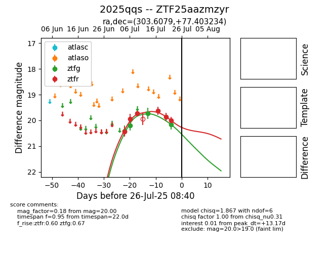

Target 2025qqs at 2025-07-26 08:40, see:
FINK: fink-portal.org/2025qqs
Lasair: lasair-ztf.lsst.ac.uk/objects/2025qqs
ALeRCE: alerce.online/object/2025qqs
TNS: wis-tns.org/object/2025qqs
YSE: ziggy.ucolick.org/yse/transient_detail/2025qqs
alt names
ZTF25aazmzyr (ztf,fink)
2025qqs (tns,yse)
coordinates:
equatorial (ra, dec) = (303.6079,+77.40323)
galactic (l, b) = (110.2159,+22.10137)
photometry
last ztfg=20.17, ztfr=20.00
4 ztfg, 6 ztfr detections
